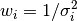
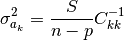

Curve Fitting¶
Nonlinear Optimization¶
This is the core. We have a set of observations (data points) to which we want to fit a model that depends on adjustable parameters. Let me quote Numerical Recipes, chapter 15.0, page 656):
The basic approach in all cases is usually the same: You choose or design a figure-of-merit function (merit function, for short) that measures the agreement between the data and the model with a particular choice of parameters. The merit function is conventionally arranged so that small values represent close agreement. The parameters of the model are then adjusted to achieve a minimum in the merit function, yielding best-fit parameters. The adjustment process is thus a problem in minimization in many dimensions. […] however, there exist special, more efficient, methods that are specific to modeling, and we will discuss these in this chapter. There are important issues that go beyond the mere finding of best-fit parameters. Data are generally not exact. They are subject to measurement errors (called noise in the context of signal-processing). Thus, typical data never exactly fit the model that is being used, even when that model is correct. We need the means to assess whether or not the model is appropriate, that is, we need to test the goodness-of-fit against some useful statistical standard. We usually also need to know the accuracy with which parameters are determined by the data set. In other words, we need to know the likely errors of the best-fit parameters. Finally, it is not uncommon in fitting data to discover that the merit function is not unimodal, with a single minimum. In some cases, we may be interested in global rather than local questions. Not, “how good is this fit?” but rather, “how sure am I that there is not a very much better fit in some corner of parameter space?”
Our function of merit is the weighted sum of squared residuals (WSSR), also called chi-square:
Weights are based on standard deviations, . You can learn why squares of residuals are minimized e.g. from chapter 15.1 of Numerical Recipes.
The most popular method for curve-fitting is Levenberg-Marquardt. Fityk can also use a few general-purpose optimization methods. These methods are slower, some of them are orders of magnitude slower. Sometimes alternative methods find global minimum when the L-M algorithm is stuck in a local minimum, but in majority of cases the default L-M method is superior.
Uncertainty of Parameters¶
(It is easier for me to find a quote than to express it myself).
From the book J. Wolberg, Data Analysis Using the Method of Least Squares: Extracting the Most Information from Experiments, Springer, 2006, p.50:
(…) we turn to the task of determining the uncertainties associated with the
’s. The usual measures of uncertainty are standard deviation (i.e., σ) or variance (i.e., σ2) so we seek an expression that allows us to estimate the ’s. It can be shown (…) that the following expression gives us an unbiased estimate of :

Note that is a square root of the value above. In this formula n-p, the number of (active) data points minus the number of independent parameters, is equal to the number of degrees of freedom. S is another symbol for .
Terms of the C matrix are given as (p. 47 in the same book):
above is often called a standard error. Having standard errors, it is easy to calculate confidence intervals. But all these values should be used with care. Now another book will be cited: H. Motulsky and A. Christopoulos, Fitting Models to Biological Data Using Linear and Nonlinear Regression: A Practical Guide to Curve Fitting, Oxford University Press, 2004. This book can be downloaded for free as a manual to GraphPad Prism 4.
The standard errors reported by most nonlinear regression programs (…) are “approximate” or “asymptotic”. Accordingly, the confidence intervals computed using these errors should also be considered approximate.
It would be a mistake to assume that the “95% confidence intervals” reported by nonlinear regression have exactly a 95% chance of enclosing the true parameter values. The chance that the true value of the parameter is within the reported confidence interval may not be exactly 95%. Even so, the asymptotic confidence intervals will give you a good sense of how precisely you have determined the value of the parameter.
The calculations only work if nonlinear regression has converged on a sensible fit. If the regression converged on a false minimum, then the sum-of-squares as well as the parameter values will be wrong, so the reported standard error and confidence intervals won’t be helpful.
Bound Constraints¶
Simple-variables can have a domain.
Fitting method mpfit (Lev-Mar implementation) and the methods
from the NLOpt library use domains to constrain the parameters
– they never let the parameters go outside of the domain during fitting.
In the literature, bound constraints are also called box constraints or, more generally, inequality constraints. Now a quotation discouraging the use of constraints. Peter Gans, Data Fitting in the Chemical Sciences by the Method of Least Squares, John Wiley & Sons, 1992, chapter 5.2.2:
Before looking at ways of dealing with inequality constraints we must ask a fundamental question: are they necessary? In the physical sciences and in least-squares minimizations in particular, inequality constraints are not always justified. The most common inequality constraint is that some number that relates to a physical quantity should be positive, pj > 0. If an unconstrained minimalization leads to a negative value, what are we to conclude? There are three possibilities; (a) the refinement has converged to a false minimum; (b) the model is wrong; (c) the parameter is not well defined by the data and is not significantly different from zero. In each of these three cases a remedy is at hand that does not involve constrained minimization: (a) start the refinement from good first estimates of the parameters; (b) change the model; (c) improve the quality of the data by further experimental work. If none of these remedies cure the problem of non-negativity constraints, then something is seriously wrong with the patient, and constrained minimization will probably not help.
Setting the domain is described in the section Domains.
For a convenience, the box_constraints option can globally disable
(and re-enable) the constraints.
Levenberg-Marquardt¶
This is a standard nonlinear least-squares routine, and involves computing the first derivatives of functions. For a description of the algorithm see Numerical Recipes, chapter 15.5 or Siegmund Brandt, Data Analysis, chapter 10.15. Essentially, it combines an inverse-Hessian method with a steepest descent method by introducing a λ factor. When λ is equal to 0, the method is equivalent to the inverse-Hessian method. When λ increases, the shift vector is rotated toward the direction of steepest descent and the length of the shift vector decreases. (The shift vector is a vector that is added to the parameter vector.) If a better fit is found on iteration, λ is decreased.
Two implementation of this method are available: one from the MPFIT library, based on the old good MINPACK code (default method since ver. 1.3.0), and a custom implementation (default method in earlier fityk versions).
To switch between the two implementation use command:
set fitting_method = mpfit # switch to MPFIT
set fitting_method = levenberg_marquardt # switch to fityk implem. of L-M
The following stopping criteria are available for mpfit:
the relative change of WSSR is smaller than the value of the
ftol_reloption (default: 10^-10),the relative change of parameters is smaller than the value of the
xtol_reloption (default: 10^-10),
and for levenberg_marquardt:
the relative change of WSSR is smaller than the value of the
lm_stop_rel_changeoption twice in row,λ is greater than the value of the
lm_max_lambdaoption (default: 10^15), which normally means WSSR is not changing due to limited numerical precision.
Nelder-Mead Downhill Simplex¶
To quote chapter 4.8.3, p. 86 of Peter Gans, Data Fitting in the Chemical Sciences by the Method of Least Squares:
A simplex is a geometrical entity that has n+1 vertices corresponding to variations in n parameters. For two parameters the simplex is a triangle, for three parameters the simplex is a tetrahedron and so forth. The value of the objective function is calculated at each of the vertices. An iteration consists of the following process. Locate the vertex with the highest value of the objective function and replace this vertex by one lying on the line between it and the centroid of the other vertices. Four possible replacements can be considered, which I call contraction, short reflection, reflection and expansion.[…] It starts with an arbitrary simplex. Neither the shape nor position of this are critically important, except insofar as it may determine which one of a set of multiple minima will be reached. The simplex than expands and contracts as required in order to locate a valley if one exists. Then the size and shape of the simplex is adjusted so that progress may be made towards the minimum. Note particularly that if a pair of parameters are highly correlated, both will be simultaneously adjusted in about the correct proportion, as the shape of the simplex is adapted to the local contours.[…] Unfortunately it does not provide estimates of the parameter errors, etc. It is therefore to be recommended as a method for obtaining initial parameter estimates that can be used in the standard least squares method.
This method is also described in previously mentioned Numerical Recipes (chapter 10.4) and Data Analysis (chapter 10.8).
There are a few options for tuning this method. One of these is a
stopping criterium nm_convergence. If the value of the
expression 2(M−m)/(M+m), where M and m are the values
of the worst and best vertices respectively (values of objective functions of
vertices, to be precise!), is smaller then the value of
nm_convergence option, fitting is stopped. In other words,
fitting is stopped if all vertices are almost at the same level.
The remaining options are related to initialization of the simplex.
Before starting iterations, we have to choose a set of points in space
of the parameters, called vertices. Unless the option
nm_move_all is set, one of these points will be the current
point – values that parameters have at this moment. All but this one
are drawn as follows: each parameter of each vertex is drawn separately.
It is drawn from a distribution that has its center in the center of the
domain of the parameter, and a width proportional to
both width of the domain and value of the nm_move_factor
parameter. Distribution shape can be set using the option
nm_distribution as one of: uniform, gaussian,
lorentzian and bound. The last one causes the value of the
parameter to be either the greatest or smallest value in the domain of
the parameter – one of the two bounds of the domain (assuming that
nm_move_factor is equal 1).
NLopt¶
A few methods from the NLopt library are available:
nlopt_nm– Nelder-Mead method, similar to the one described above,nlopt_lbfgs– low-storage BFGS,nlopt_var2– shifted limited-memory variable-metric,nlopt_praxis– PRAXIS (PRincipal AXIS),nlopt_bobyqa– BOBYQA,nlopt_sbplx– Sbplx (based on Subplex),
All NLopt methods have the same stopping criteria (in addition to the common criteria):
an optimization step changes the WSSR value by less than the value of the
ftol_reloption (default: 10^-10) multiplied by the WSSR,an optimization step changes every parameter by less than the value of the
xtol_reloption (default: 10^-10) multiplied by the absolute value of the parameter.